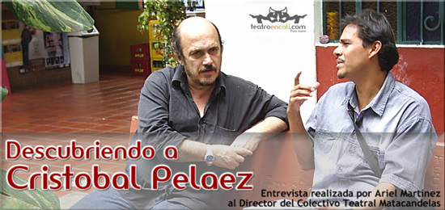
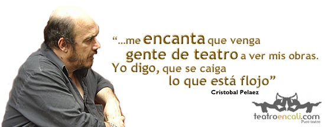
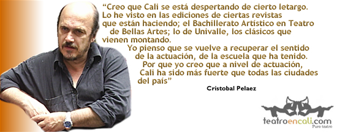

Descubriendo a Cristobal...
Artículo extraido de www.teatroencali.com
Hacia el medio día del lunes 8 de mayo de 2006 Ariel Martínez*, se encontró cara a cara en Cali Teatro con Cristóbal Peláez, ese paisa que desde hace 27 años viene dirigiendo al grupo Matacandelas. La intención era una sola, conocerlo más, descubrir sus estrategias y que nos compartiera cuál es esa mirada que tiene sobre el teatro en Colombia.
* Entrevista Realizada por ARIEL MARTÍNEZ (Director Editorial de www.teatroencali.com)

Una charla extensa y llena de matices fue el resultado de esta entrevista; Cristóbal es un buen conversador, lleno de anécdotas y referencias literarias que motivan y orientan su visión frente al oficio de hacer teatro.
TEATRO EN CALI: ¿Cómo fue el comienzo de Matacandelas? ¿Qué los motivó a conformarse como grupo?
CRISTOBAL PELÁEZ: El deseo parte de la goma de hacer teatro, desde los años estudiantiles, de colegio y que pervive en uno, se mantiene. Fuimos varios amigos que nos reencontramos al cabo de los años, en el año 79 y decidimos fundar este grupo. El deseo es básico, es compartir el teatro, la proyección del arte teatral en la comunidad, entendiendo el teatro como un patrimonio cultural de los pueblos. Sabíamos que cada vez que estábamos cerca al teatro la pasábamos bien. El concepto de pasarla bien es muy importante, podría mirarse de una manera superficial, pero para nosotros, es algo muy profundo. Hacer teatro, reflexionar sobre la vida, mostrar el comportamiento de los hombres, los comportamientos sociales, el acercamiento con la literatura, con la música, con el movimiento, con el cuerpo, nos parece fundamental.
TC: Ustedes tienen, como concepto, una estética no definida, una certeza sobre las dudas, no se casan con los éxitos momentáneos, quieren hacer propuestas frescas. ¿Podrías hablarnos al respecto?
CP: Es un teatro que sale del escenario mismo. Por eso somos muy lentos en nuestros montajes. Tenemos unas particularidades muy especiales, entre otras: procuramos mantener las obras mucho tiempo en repertorio. Creemos que son esfuerzos creativos muy grandes que valen la pena compartirlos con el mayor número posible de personas. No creemos en la veleidad de -“que el estreno, que se hacen 5 funciones y desaparece eso”. Tratamos de darles permanencia, no ser tan veleidosos con ese afán pequeño burgués de estrenar, estrenar, estrenar. Este es un reto con uno mismo, si es creativo. La creatividad no es una chispa explosiva, sino que es un sedimento que queda después de las emociones que se viven, después de las lecturas, después de las observaciones y las reflexiones sobre la vida. Desde este punto de vista, tratamos de que los montajes salgan con mucho rigor. También somos muy lentos porque vamos explorando con unas temáticas y unos autores con mucho tiempo y procuramos que eso no salga a partir de las imágenes vistas, de los sonidos ya percibidos, sino, que el escenario sea un campo de exploración, que el cuerpo mismo del actor saque esa teatralidad. En este sentido a nosotros, como grupo, nos ha ido muy bien, porque el espectador ha ido viendo ese camino que nos hemos trazado, esa exploración, esa indagatoria. Bueno, salen cosas que no son muy distintas a lo que hacen los demás, pero yo creo que sí tienen su fuerza interior.
TC: Ustedes dicen que tienen una carencia de dogma, viven una exploración permanente, les gusta tantear con viejos y nuevos lenguajes. Pero ¿en este momento se podría decir que Matacandelas tiene una estética definida, una tendencia definida, en cuanto a su plástica, a la forma de trabajar y abordar los textos y la palabra en escena?
CP: Sí. Yo creo que sí. Lastimosamente uno también se va casando con cierta estética. Hay mucha gente que nos dice, “vi tal obra y tiene el corte de Matacandelas”. Pero cuando se habla de un corte de Matacandelas, se habla de un corte económico, en la imagen, en el sonido, en todo lo que se explora, porque el teatro nuestro es un teatro que tiende mucho hacia lo sencillo, hacia lo estático, hacia la literatura. Se discute mucho - me parece que es una discusión mezquina - que el arte del nuevo teatro no es literatura, que la literatura no tiene nada que ver con el teatro. Aunque la discusión es interesante, muy enriquecedora, llega a ser mezquina. Las fronteras del teatro no están trazadas y nosotros tratamos de tantear esas fronteras. Un crítico en España, viendo Angelitos empantanados, nos dijo: “Es demasiada literatura para ser teatro, es demasiado teatro para ser literatura, es demasiada literatura y teatro para ser cine; no alcanza a ser ni cine, ni teatro, ni literatura ¿qué es eso? Veo que ustedes han hecho una cosa muy rara, una compota muy rara.” Entonces yo digo, a mí me gustan esos territorios indecisos en que uno dice - y esto realmente qué es, porque ese asunto de la teatralidad quién lo determina o cómo se determina -. De acuerdo a las tradiciones, sabemos que el teatro griego, por lo menos la etapa que corresponde a Esquilo, Sófocles y Eurípides, es un teatro excesivamente literario, que no contenía muchas acciones y no había ni siquiera, didascalias, por lo menos no nos han llegado esas acotaciones de dramaturgo. Era un teatro de literatura pública, literatura al aire libre, como la quería Jorge Zalamea Borda. Ya sabemos que el teatro está plenamente demarcado por los conflictos de los personajes, porque si no hay representación, no hay conflicto, se llega a la etapa de la narración oral.
Pero yo creo que en ese terreno, el s. XX, digamos a nivel mundial, se dio mucha libertad para explorar. El teatro soltó muchas amarras y empezó a coquetear con el cine, con la música, con la danza, con el performance, con todas estas formas, que de repente, contaminan el teatro y que contaminándolo, también lo enriquecen.
TC: Sabiendo que el hombre de teatro, la persona que tiene en el hacer teatro su proyecto de vida, y en general el hombre, nunca acaba de aprender, cómo manejan eso de formarse cada día, pero también de formar u orientar personas que están inquietas por esto y quieren ser parte de esto que es el teatro?
CP: Hay una parte que es la base técnica. Lo que el actor requiere acerca del movimiento, acerca de la voz, eso innegable que es la base por la cual muchos muchachos se acercan a la universidad, se acercan a una formación académica, para agarrar unas herramientas, unas bases. Ya después viene esa etapa donde uno empieza a poner su punto de vista, su concepción del mundo, que ya tiene que ver con la parte filosófica. Es una parte técnica y una parte filosófica; en lo filosófico involucramos lo literario, la pintura, todas las formas artísticas. El teatro es una sumatoria de todo eso, porque su riqueza consiste en que puede reunir todo. Hacemos mucho énfasis en la parte filosófica, en la concepción del mundo, por qué hacemos teatro, para qué lo hacemos. Esto, obviamente, alguien lo acoge o no lo acoge. Siempre habrá una persona que llegue al teatro a mirar y tener una referencia sobre el mundo. Desde ese punto de vista, el Matacandelas ha sido un grupo, que por eso, se ha mantenido; porque esas bases filosóficas son firmes. Hay otra base que es política; yo nunca he querido ser el propietario del teatro, ser un tipo con mucha fama, con mucho prestigio, un gran director e irme para otro lado. De hecho he desechado varias propuestas y es por eso, porque hay que decirlo y tajantemente, nosotros somos una pandilla y somos una pandilla con una idea comunista. El comunismo puede que no haya servido en Rusia y puede que haya sido un fracaso a nivel mundial, eso no lo vamos a discutir ahora; el comunismo con nosotros ha sido un éxito. Esa ideología nos ha servido. De caminar juntos, de apartarnos de ese egoísmo, de esa cosa tan tenaz que tenemos los seres humanos, que viene desde la etapa bestial y compartir con el otro, eso es muy importante. Ya no se usa el término individuo, sino con dividuo, en parte lo individual y lo que, con el otro, fracciono, comparto, etc. Desde este punto de vista, la ideología del grupo ha sido una filosofía del compartir, de caminar juntos, de no quitarnos nunca ese carácter de pandilla, de una banda, que en este caso no se dedica a la criminalidad, sino, al teatro. Esas tres partes se trabajan muchísimo en el grupo y todavía hay seres humanos que acogen y les gusta esa propuesta. Porque si bien, el ser humano parte de que es una bestia inmunda, también, el ser humano es capaz de pensar y tener acceso a la poesía y a los sentimientos bellos, los sentimientos nobles. Yo creo que esa es la parte en la que un grupo puede existir.

TC: Personalmente, he tenido la fortuna de ver tres montajes de Matacandelas. Angelitos empantanados, Medea y Los Ciegos. Me llama inmensamente la atención el tratamiento sobre la palabra, sobre el texto. Uno esperaría de un grupo de Medellín, el marcado acento paisa y lo que menos escucho en estas tres obras es precisamente el acento paisa. ¿Cómo viven ustedes ese proceso de abordar los textos, la palabra en sus puestas?
CP: Nosotros tenemos como esa arandela. Incluso una de las cosas más interesantes que tiene el teatro en Cali es que me parece que el tratamiento de la palabra es muy bueno. En Medellín es fatal, es horrible, allá hay un eslogan y es “el actor se mueve muy bien hasta que habla, cuando habla la caga.” En Medellín es terrible, no veo una escuela de recitación, pero yo que tuve la oportunidad de ver muchos años los trabajos del TEC, de Esquina Latina, La Máscara, Cali Teatro, El Taller; actores muy destacados como los hermanos Fernández (Helios, Liber y Aída) y otros que se me escapan.
Siempre hemos trabajado muchísimo sobre la palabra, eso no es inocente, ni gratuito y todavía sigo teniendo problemas con los actores. Es decir, en el escenario no se debe hablar como en la vida corriente. Nadie se puede mover en el mundo, ni se mueve tan bien como en la danza, si no fuera por la danza el ser humano perdería el movimiento, si no fuera por el teatro el ser humano perdería la palabra. En el habla cotidiana ya la palabra, poco a poco, se ha ido perdiendo. Ya no se dice qué hubo, se dice “quiubo”. Ya nos guiamos por señales muy codificadas y la palabra está atropellada. En el escenario se recupera ese sentido de la palabra, ese acto de habla y eso es maravilloso. En el Matacandelas trabajamos muchísimo sobre eso. Y a los nuevos integrantes siempre les decimos que hagan muchos ejercicios técnicos y de lectura. A los actores, siempre les pongo el ejercicio de hablar muy bajito, para que se oigan ellos mismos. Es un ejercicio que aprendí de Brecht. Así montamos los ciegos; yo estaba muy descontento con lo fónico, no me gustaba. Hasta que les dije que hicieran el siguiente ejercicio: Ante todo, la gracia es que yo no oiga a nadie, yo estoy parado aquí en frente y no necesito oírlos; háblense ustedes en primer lugar; ya después viene la técnica de cómo proyecto. Porque cuando hablamos muy duro y vos no te oís, perdés la dimensión del habla, de la entonación.
Hay otro factor que me enamora de los teatros pequeños, porque teatros así como Cali teatro, me emocionan mucho. Bueno, se afecta mucho la taquilla, pero el actor disfruta muchísimo, porque está ante una audiencia, la cual le está viendo el movimiento de los ojos, la matización, aquello que aparece como imperceptible en las grandes salas. Esa ha sido una discusión que hemos tenido en Medellín, porque nos decían - ya que Matacandelas es un grupo grande y van a reformar su sede, por qué no piensan en un teatro para 400 o 500 personas.- Yo me horrorizo y digo qué hago con un teatro para 500 personas, eso es para banquetes. Definitivamente sigo siendo amante de esas salitas de 80 o 100 personas, nosotros no necesitamos más y el actor no necesita más. En los teatros grandes usted tiene que trabajar con movimientos grandes y en salas pequeñas con movimientos imperceptibles que son bien captados. Eso es fundamental para la formación actoral.
TC: Haz dicho que tus montajes son lentos, pero ¿podrías explicarnos cómo es ese proceso de investigación previa a un montaje?
CP: Donde nosotros hicimos un modelo perfecto de funcionamiento investigativo de exploración fue con Andrés Caicedo. Fue lectura de todas sus obras que pudimos alcanzar, incluso de obras inéditas. Venirnos a Cali toda una semana (obviamente Angelitos empantanados es una obra ficcional, pero tiene una localización geográfica) hacer todos los recorridos desde el teatro Libia, ir a Pance, ir por la sexta, hablar con la familia, con todo el mundo, grabar, mirar. Al principio la familia me decía – venga usted solo.- Yo les dije -es que tiene que ser con todos los actores, porque los actores son los que crean.- Entonces es un viaje, una aventura; una etapa que nosotros decimos, lástima que esto se tenga que montar. Porque eso tiene que arrojar un resultado, siempre andamos buscando resultados; porque es la etapa del compromiso público, el compromiso con uno mismo, a que sí soy capaz de montar esto.
Con Fernando González estamos haciendo un proyecto ahora, desde hace año y medio. Y eso va desde los calzoncillos de Fernando González, hasta los últimos escritos y averiguarnos muchos materiales. Tenemos, incluso, un árbol hijo de un árbol que él sembró en 1950 al que llamamos Fernando y que hace parte de la reforma de la casa. Tenemos un maletín con objetos de él. Es un proceso de un año, de leer, leer, releer. De meterse a ese universo para entenderlo. Nosotros decimos, es un trabajo de entendimiento, trabajamos lo visual; qué imágenes nos pueden servir, qué libros. Te doy un ejemplo: Fernando González decía a sus nietos –los voy a llevar a un gran concierto de música.- Y se los llevaba al pie de un arroyo donde caía el agua. Les decía –escuchen; esta es la mejor música del mundo.- Entonces, todos esos conceptos a nosotros nos sirven muchísimo. Pero, hay un tipo de investigación, que en el teatro no se habla mucho de ella y que me interesa mucho, que es la investigación táctil; que es el tocar, el ir, cómo es la cama de él (obviamente, esto me lo escucha Roland Barthes, el francés, se enojaría conmigo) ir a la casa donde él nació, vivió, hablar con la gente, recoger datos. No por un carácter documental, aunque a mí me atrapa mucho el documental, cuando vean el trabajo de Silvia Plath, todo el tiempo, lo que trato de hacer es un documental. Las primeras etapas de Los Diplomas era documental, y de repente me ha ido interesando mucho el cuento del teatro documental. Porque al fin y al cabo el teatro es memoria. Ahí es donde encaja lo que decías que nosotros trabajamos con nuevos y viejos lenguajes, como Los Ciegos que es una obra de 1860, casi no le variamos nada; hicimos un retorcijo dramatúrgico, porque veíamos que había algún problema con la dramaturgia para aconductarse con el hombre de hoy. Porque las conductas del hombre de hoy han cambiado, entonces, no es actualizarlo en el sentido de... (Yo detesto esas obras en que “vamos a montar Medea con televisores y celulares y otras cosas”, actualizar no es eso.) Actualizar es cómo puedo yo llegar nuevamente a los griegos, visitarlos, puesto que yo tengo necesidad de ellos, no es cómo me visitan los griegos. Uno de los ejemplos que yo pongo es que Medea no tiene necesidad de venir hacia nosotros, ella está allá tranquilita; es más, ella no está deprimida porque no la llamaron para un seminario sobre mitos. Medea está allí, es la necesidad de uno como ser humano de estar allá.
Es un paseo encantador lo de la investigación teatral. Por eso no me gusta montar obras de Moliere u obras de acotaciones. Salga usted por ahí, si ya arregló y lo habló, muy bien, pasemos a la otra escena. Eso me parece como ebanistería. Me gusta más cuando el actor me propone una cosa que uno diga eso es teatral o no es teatral. En angelitos nos decían que había cosas que no eran teatro y nosotros nos divertíamos mucho y decíamos que nosotros sabíamos que no era teatro, pero que íbamos a ver cómo funcionaba con el público.

TC: Contános ¿cómo funciona lo de la dirección en el grupo?
CP: A mí me encantaría que fuésemos 5 directores. No me gusta dirigir solo, porque yo no trato de poner en escena mis ideas. Aprendí mucho de Jorge Eines; decía una cosa que me impresionaba, y citando a Barouch Spinoza el filósofo “Nadie sabe de lo que es capaz un cuerpo”. Algo que me emociona muchísimo siempre, son los actores. A los actores del grupo (que ya están acostumbrados) les suelto un texto y les digo “invénteselo”. Nosotros trabajamos con unos modelos; por ejemplo, una escena que es esta paginita, nos dividimos en tres grupos y a trabajar. A veces me dicen que eso que les pasé no es teatro, yo les digo, eso es problema de ustedes. La fase mía consiste en que yo veo lo que el actor me va soltando. Y empiezo a trabajar con el actor. El texto nunca lo toco, jamás, mientras estoy montando. Todo el tiempo estoy con el actor, leyéndolo, leyéndolo. Me gustan mucho los actores.
Hay dos cosas, a veces soy contrario en eso; hay gente de teatro que dice: “Lo que más nos emputa de una obra es que la venga a ver gente de teatro, porque los de teatro no son sino criticones y no ven sino lo malo. Vienen esos de teatro y me van a destrozar la obra”. A mí, por el contrario, me encanta que vengan. Yo digo, que se caiga lo que está flojo. Me encanta presentármele a la gente de teatro, incluso hasta los enemigos, porque si hay algo flojo ellos lo ven. Porque esta gente sabe. La gente que está en contacto con un escenario todos los días sabe y ellos son los que mejor pueden apreciar ciertas cosas que hacemos y que el público común no aprecia. Una persona de teatro sí va a saber lo que hicimos ahí, por eso me encanta este tipo de público.
Hay casos de grupos que quieren trabajar sobre unos textos hechos, que siguiendo una tradición de moverse en el escenario, montan esas cosas en 8 días; uno dice, eso es como para qué, a qué va destinado ¿a un colegio? ¿A ganarse unos centavos? El teatro tiene varios enemigos, uno de los grandes enemigos es el trabajo con los colegios, eso es terrible, eso es un trabajo de prostitución que uno hace.
TC: ¿En los colegios ó para los colegios?
CP: Para los colegios. Que puede ser una labor muy bonita, muy reformista, sí, pero es que los muchachitos llegan sin ninguna inducción, sin ninguna necesidad, simplemente a cumplir una tarea. Uno les arranca unos centavitos y ya. Es un oficio como de puta. No es el público que llega buscando el espectáculo. En ese sentido, nosotros no vamos a montar esa obra para tal público, sino, que es lo que nosotros queremos hacer. Hemos sobrevivido con eso, lo que indica que no está mal, que no estamos tan equivocados diría yo.
TC: ¿Dejando un poco de lado la creación y pasando al aspecto que tiene que ver con la consecución de su sede, cómo ha sido ese proceso?
CP: Ha sido un proceso muy largo, lo sigue siendo, porque existe una cosa como que el teatro es algo que le sobra a la sociedad. El pueblo colombiano podría mantenerse muy bien leyendo el almanaque Bristol. Incluso, en rigor, no deberían existir librerías, ni existir teatro. Uno a veces piensa si este pueblo se merece esto. No, que le regalen a cada colombiano un almanaque Bristol y con eso tiene, con el chistecito fraccionado, con el horóscopo y otras cositas, este pueblo no necesita más. Es como el pensamiento pesimista de uno. Entonces para nosotros, conseguir una casa, era un trabajo imposible, pero nos metimos de cabeza. Nos metimos y estábamos pereciendo, porque eso entró a embargo, iba a entrar a remate, todo el mundo nos apabullaba, toda la sociedad encima, por qué se metieron en eso, ustedes no cabían en eso. Eso llegó a un punto muy grave, tan grave que nos iban a quitar la casa. Nosotros compramos la casa en 120 millones en el año 94 y cuando habíamos pagado alrededor de 30 millones, fuimos a mirar las cuentas y ya se debían como 160 millones. Dijimos, si esto sigue así, a la vuelta de dos años va a estar como en 2.000 millones. Con una platica que teníamos ahorrada en el banco, más o menos 25 millones, fui y hable con la gerente, con los abogados y les dije –yo no les voy a pagar un peso más, voy a coger todo esto y lo voy a utilizar en armas; voy a comprar metralletas, explosivos, granadas y nos vamos a parapetar y vamos a hacer nuestro último happening en el caballete de esa casa y voy a volver esto un mierdero-. Es que siempre es así en este país, y si no hay patria para nosotros, entonces, hijueputa, que no haya para nadie. La cosa se estaba complicando, pero, a veces llega lo inesperado. Se enteró de todo esto, el gerente de una cooperativa y dijo que iba a financiar la casa. Fue y negoció la deuda. (¿Cuánto debe este grupo? -160 millones. –Les doy 125. –Sí, tenga las llaves. Se la vendieron.) El señor nos dijo que se la fuéramos pagando. Estaba para pagarse en 8 o 10 años, la pagamos en 6. La cooperativa nos brindó todo el apoyo. Luego tuvimos un año como de recuperación, de sanear deudas, finanzas; ahora vamos a empezar la reforma del espacio. Es un espacio muy visitado en Medellín. La sede trabaja con un promedio muy alto de visitantes. Y en los últimos años con la nueva administración municipal, hemos tenido más apoyo; lo de las salas abiertas y otras cosas.
Nosotros trabajamos una región muy difícil, porque el paisa es un ser muy extraño, nosotros los paisas somos muy amarrados, nosotros no vamos a ir a comprar una boleta por dejar de comprar un sancocho. Eso me parece un crimen. Porque eso viene desde nuestra cultura. “Vos cómo vas a gastar en una boleta, en una bobada, en una cosa, en una obra, que además no es verdad, que eso es mentiras.” Un día estábamos presentando una obra de títeres y nos pasó un cacharro, porque el público estaba bien conectado, en un momento de silencio, de mucha tensión y se paró un niño y dijo: “Muchachos, todo eso que está pasando allá, eso es mentiras”, nosotros soltamos la risa y dijimos, ese es el espíritu paisa. Hay una frase en Antioquia, muy común, que dice: “Ir a ver esos enguandos, eso es para enredarlo a uno”. Entonces hay una cultura de que la noche se hizo para dormir y el día para trabajar, que es la cultura capitalista, rendir, rendir. Los paisas somos una porquería, eso tenemos que decirlo. A este pueblo tenemos que cambiarlo a punta de cultura, porque el paisa se lastima mucho, pero hasta que no se reconozca como es de bobo, de montañero, de apocado para la vida, no podremos salir adelante. Nos dicen, pero ustedes por qué hablan tan mal de nosotros mismos. Es que hay que auto criticarnos. Nosotros somos avarientos, figurativos, a nosotros lo abstracto no nos funciona. Una señora no te va cambiar un cuadro del corazón de Jesús por uno de Picasso. Allá las casas están decoradas con cuadros de lagos con cisnes y paisajes. Botero dijo algo que me impresiona: “En todas las casas colombianas deberían prenderme una velita a mí, porque yo empecé a sacar a ese pueblo de ahí.” Y eso, que la cultura de ese tipo tiene todavía rasgos de eso que nosotros somos, bobos.
TC: Ustedes que son de Medellín ¿cómo ven el teatro que se está haciendo actualmente en esa ciudad, cómo se está dando ese movimiento allá?
CP: Cuando uno habla dicen que uno es un engreído. Incluyendo al Matacandelas, me parece muy poquito y malo. No porque uno diga, no me gusta el teatro. Yo voy a ver todas las obras que puedo. Me encanta ver teatro, así sea mal teatro. O lo que califican como mal teatro, que es muy subjetivo. Pero los colectivos que hay, casi siempre son ya una parejita que está tratando de conseguir una platica para el arriendo; peca en el concepto filosófico. Hay una cosa que a mí me súperemputa es que la gente se dedique a la sobrevivencia y entonces, ideas cero. “Vamos a montar esta obrita, montemos esto rapidito de Darío Fo, de Paulo Coello, porque con eso nos vamos a conseguir la platica para pagar el arriendo.” Hay que diferenciar bien la sobrevivencia del concepto filosófico. (Usted por qué es pintor –Yo soy pintor porque me estoy vendiendo al mes 20 corazones de Jesús y me va muy bien porque los vendo a $100.000). Eso es sobrevivencia. Pero otra cosa es cuando nos dice que está componiendo, que está explorando, que está buscando lenguajes.
Lo otro, es el declive que han tenido los grupos. El concepto de grupo ha ido también muriendo. Yo no soy un gran defensor del status grupo, me parece que si una cosa se acaba, está bien. No voy a echar corriente sobre la creación colectiva porque la cuestión se volvería moralista. Nosotros tenemos un grupo y nos funciona hasta que nos funcione. Yo le he dicho a la gente que cuando quieran, desarmamos este chiringuito y ya, se acabó. Eso no es ningún problema, eso no es de moralismo, ni es de religión; es que se nos ha olvidado eso. “Hermano, reunámonos a trabajar nosotros 3, muy bien. Que cayeron estos 300.000 pesitos, vamos a repartirnos estos hijueputas a ver qué pasa.” Pero si usted está por la sobrevivencia, por la lechita para el niño y esas cosas, con el teatro le va a quedar muy difícil, lo mejor es que se busque otra cosa.
El teatro en Colombia se está haciendo, siempre se ha hecho, desde nuestro nacimiento como teatro hace 60 años, Enrique Buenaventura, Santiago García, etc. con las uñas; de puras ganas, con una sociedad que está enfermísima. Como dice David Mamet “No es el teatro el que está enfermo, es la sociedad”. Por eso nosotros nos hemos dedicado muy tranquilamente a hacer teatro y a gozar y a pasar bueno. Hemos dicho que el concepto de nosotros es pasarlo bueno, no hacer esto por apostolado. No como decía alguien -es muy importante para “culturizar” a la gente-; ese concepto a mí me horroriza “culturizar”. No, es compartir estremecimientos, compartir emoción, como cuando el poeta escribió su librito y vos decís qué bueno. Como cuando uno lee a Baudelaire a Rimbaud, uno dice si no existieran estos tipos habría que inventarlos. Cuando uno lee a Borges, uno dice la literatura es una cuca (algo muy bueno y bonito). Porque pertenece a un campo de la satisfacción humana que no te lo llena ni la comida, ni la ducha, ni la vivienda, ni el baño. Vos podés tener todas estas cosas, pero vos necesitás algo que mirar, algo que contemplar. Hay un concepto que se pierde mucho y que va con el concepto de los paisas, que es lo inútil. Esta es una sociedad que detesta mucho lo inútil y lo inútil tiene una gran belleza. Por eso fue que nos metimos a la Patafísica; la Patafísica pelea siempre por lo inútil.
TC: Aunque ya haz mencionado brevemente al teatro caleño y colombiano y haz dicho que está como grave el asunto, qué nos podrías ampliar en lo que se refiere específicamente a tu visión del teatro caleño actual.
CP: Yo admiraba mucho, años ha, el trabajo del TEC, antes que entrara en esta etapa de agonía, agonía perpetua. En el trabajo de Enrique admiraba mucho lo que tenía que ver con la imagen, con la dramaturgia; el trabajo de Esquina Latina, que me parece un grupo muy serio; igualmente el trabajo de la Máscara. Pero lo que he visto, es que se quedó sin padre y eso me parece muy interesante. El teatro en Medellín es muy inquieto, muy explorativo, muy heterogéneo; es una de las ventajas que tenía Medellín con respecto a Cali, ahora ya como que se igualaron las cosas. Me parece fabuloso lo que está pasando, porque la gente se dio cuenta que esa normatividad que había, que el hacer teatro en un solo sentido, había que cambiarlo. Luego ve uno cosas prodigiosas como esta sede que se ha salvado para el teatro. Yo alcancé a ver esto en ruinas. El trabajo, las salas que hay aquí, el cuidado, el festival que hacen aquí. Me pareció que el festival fue ejemplar, la manera como lo organizaron. Me daba envidia porque en Medellín tenemos uno que está manipulado absolutamente. El trabajo de títeres que hay acá; me parece asombroso Cali como tiene tanto trabajo infantil. Creo que Cali se está despertando de cierto letargo. Lo he visto en las ediciones de ciertas revistas que están haciendo; el Bachillerato Artístico en Teatro de Bellas Artes; lo de Univalle, los clásicos que vienen montando. Yo pienso que se vuelve a recuperar el sentido de la actuación, de la escuela que ha tenido. Porque, yo creo que a nivel de la actuación, Cali ha sido más fuerte que todas las ciudades del país.
Con esa alentadora visión del teatro en nuestra ciudad cerramos la entrevista y agradecemos a Cali Teatro por permitirnos el espacio y a Cristóbal por la disposición para la realización de la misma. Nuestro proyecto irá construyendo de esta manera la memoria del teatro en Cali.